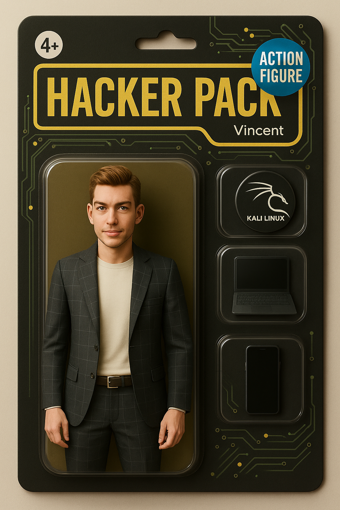

DisponibleJ'ai commencé mon parcours par un baccalauréat professionnel Commerce, avant de me réorienter vers le secteur du bâtiment, où j'ai exercé en tant qu'électricien après l'obtention de mon CAP.
Curieux de découvrir d'autres métiers manuels, je me suis ensuite tourné vers le métier de paysagiste, que j'ai pratiqué pendant deux ans. Ces différentes expériences m'ont permis de mieux cerner ce qui m'anime réellement au quotidien.
C'est ainsi que j'ai décidé de me reconvertir dans un domaine qui me passionne : l'informatique. J'ai donc repris mes études en intégrant la formation BTS Services Informatiques aux Organisations (SIO), afin de me former aux métiers du numérique.
Esprit logique
Capacité d'adaptation
Curiosité technique
Communication
Autonomie
Réactivité